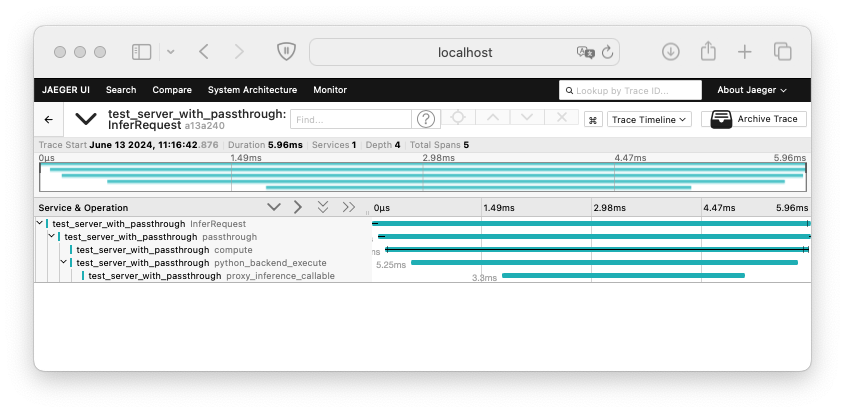
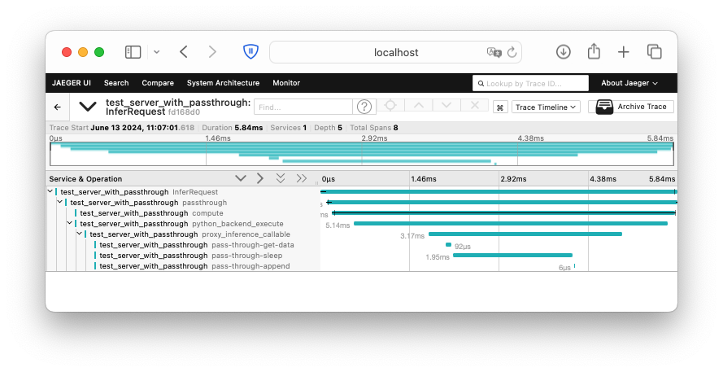
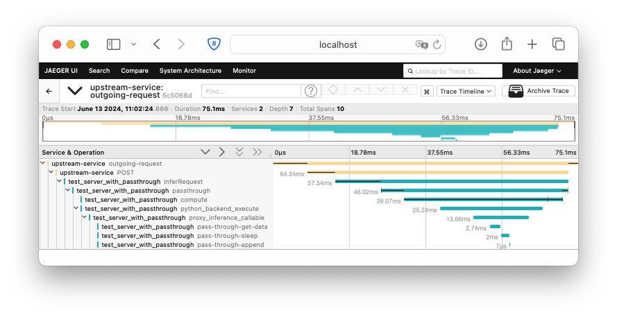

Distributed Tracing
Distributed tracing enables tracking application requests as they traverse through various services. This is crucial for monitoring the health and performance of distributed applications, especially in microservices architectures. This guide will demonstrate how to configure the Triton Inference Server to send traces to an OpenTelemetry collector and later visualize them.
Setting Up the OpenTelemetry Environment
The OpenTelemetry collector serves to collect, process, and export traces and metrics. As a collector, you can utilize the Jaeger tracing platform, which also includes a UI for trace visualization. To run Jaeger backend components and the UI in a single container, execute the following command:
docker run -d --name jaeger \
-e COLLECTOR_OTLP_ENABLED=true \
-p 4318:4318 \
-p 16686:16686 \
jaegertracing/all-in-one:1
This command will initiate a daemon mode HTTP trace collector listening on port 4318 and the Jaeger UI on port 16686. You can then access the Jaeger UI via http://localhost:16686. Further details on the parameters of this Docker image can be found in the Jaeger Getting Started document.
PyTriton and Distributed Tracing
With the OpenTelemetry collector set up, you can now configure the Triton Inference Server tracer to send trace spans to it.
The following example demonstrates how to configure the Triton Inference Server to send traces to the OpenTelemetry collector:
from pytriton.triton import TritonConfig
config=TritonConfig(
trace_config=[
"level=TIMESTAMPS",
"rate=1",
"mode=opentelemetry",
"opentelemetry,url=http://localhost:4318/v1/traces",
"opentelemetry,resource=service.name=test_server_with_passthrough",
"opentelemetry,resource=test.key=test.value",
],
)
Each parameter in the trace_config list corresponds to a specific configuration option:
level=TIMESTAMPS: Specifies the level of detail in the trace spans.rate=1: Indicates that all requests should be traced.mode=opentelemetry: Specifies the tracing mode.opentelemetry,url=http://localhost:4318/v1/traces: Specifies the URL of the OpenTelemetry collector.opentelemetry,resource=service.name=test_server_with_passthrough: Specifies the resource name for the service.opentelemetry,resource=test.key=test.value: Specifies additional resource attributes.
All the supported Triton Inference Server trace API settings are described in the user guide on tracing.
You can use config for the Triton Inference Server as follows:
import time
import numpy as np
from pytriton.model_config import ModelConfig, Tensor
from pytriton.triton import Triton
def passthrough(requests):
responses = []
for request in requests:
sleep = request.data["sleep"]
error = request.data["error"]
raise_error = np.any(error)
if raise_error:
raise ValueError("Requested Error")
max_sleep = np.max(sleep).item()
time.sleep(max_sleep)
responses.append({"sleep": sleep, "error": error})
return responses
# config was defined in example above
triton = Triton(config=config)
triton.bind(
model_name="passthrough",
infer_func=passthrough,
inputs=[Tensor(name="sleep", dtype=np.float32, shape=(1,)), Tensor(name="error", dtype=np.bool_, shape=(1,))],
outputs=[Tensor(name="sleep", dtype=np.float32, shape=(1,)), Tensor(name="error", dtype=np.bool_, shape=(1,))],
config=ModelConfig(max_batch_size=128),
strict=False,
)
triton.run()
Now, you can send requests with curl to the Triton Inference Server:
curl http://127.0.0.1:8000/v2/models/passthrough/generate \
-H "Content-Type: application/json" \
-sS \
-w "\n" \
-d '{"sleep": 0.001, "error": false}'
The Triton Inference Server will send trace spans to the OpenTelemetry collector, which will visualize the trace in the Jaeger UI. The trace included above contains several span generated by Triton and PyTriton:
InferRequest: The span representing the entire request processing lifecycle.passthrough: The span representing the execution of thepassthroughmodel.compute: The span representing the computation of the model as seen in the Triton Inference Server.python_backend_execute: The span representing theexecuteof the Python backend function.proxy_inference_callable: The span representing the proxy inference callable execution.

Custom tracing with traced_span method
PyTriton provides a simplified way to instrument your code with telemetry using the traced_span method from the Request class. This method allows you to easily create spans for different parts of your code without needing to directly interact with the OpenTelemetry API.
Example
Here is an example of using the traced_span method within a passthrough function. This function processes requests, performing actions such as getting data, sleeping, and appending responses, with each step being traced for telemetry purposes.
import time
import numpy as np
def passthrough(requests):
responses = []
for request in requests:
# Create a traced span for getting data
with request.traced_span("pass-through-get-data"):
sleep = request.data["sleep"]
error = request.data["error"]
raise_error = np.any(error)
if raise_error:
raise ValueError("Requested Error")
max_sleep = np.max(sleep).item()
# Create a traced span for sleeping
with request.traced_span("pass-through-sleep"):
time.sleep(max_sleep)
# Create a traced span for appending responses
with request.traced_span("pass-through-append"):
responses.append({"sleep": sleep, "error": error})
return responses
The introduction of three spans (pass-through-get-data, pass-through-sleep, pass-through-append) in the passthrough function allows you to track the time spent on each operation. These spans will be sent to the OpenTelemetry collector and visualized in the Jaeger UI.

Explanation
-
Creating Spans with
traced_span:- For each request, we use the
traced_spanmethod provided by theRequestclass to create spans for different operations. This method automatically handles the start and end of spans, simplifying the instrumentation process.
- For each request, we use the
-
Getting Data:
- We wrap the data extraction logic in a
traced_spannamed"pass-through-get-data". This span captures the process of extracting thesleepanderrordata from the request, checking for errors, and determining the maximum sleep time.
- We wrap the data extraction logic in a
-
Sleeping:
- We wrap the sleep operation in a
traced_spannamed"pass-through-sleep". This span captures the time spent sleeping.
- We wrap the sleep operation in a
-
Appending Responses:
- We wrap the response appending logic in a
traced_spannamed"pass-through-append". This span captures the process of appending the response.
- We wrap the response appending logic in a
Benefits
- Simplicity: Using the
traced_spanmethod is straightforward and does not require direct interaction with the OpenTelemetry API, making it easier to instrument your code. - Automatic Management: The
traced_spanmethod automatically manages the lifecycle of spans, reducing boilerplate code and potential errors. - Seamless Integration: This approach integrates seamlessly with existing PyTriton infrastructure, ensuring consistent telemetry data collection.
Advanced Telemetry Usage with OpenTelemetry API
In addition to the simple telemetry example provided using the PyTriton API, we can also leverage the direct usage of the OpenTelemetry API for more fine-grained control over tracing and telemetry. This advanced approach provides flexibility and a deeper integration with OpenTelemetry.
Example
Here is an example of using the OpenTelemetry API directly within a passthrough function. This function processes requests, performing actions such as getting data, sleeping, and appending responses, with each step being traced for telemetry purposes.
from opentelemetry import trace
import time
import numpy as np
# Initialize a tracer for the current module
tracer = trace.get_tracer(__name__)
def passthrough(requests):
responses = []
for request in requests:
# Use the span associated with the request, but do not end it automatically
with trace.use_span(request.span, end_on_exit=False):
# Start a new span for getting data
with tracer.start_as_current_span("pass-through-get-data"):
sleep = request.data["sleep"]
error = request.data["error"]
raise_error = np.any(error)
if raise_error:
raise ValueError("Requested Error")
max_sleep = np.max(sleep).item()
# Start a new span for sleeping
with tracer.start_as_current_span("pass-through-sleep"):
time.sleep(max_sleep)
# Start a new span for appending responses
with tracer.start_as_current_span("pass-through-append"):
responses.append({"sleep": sleep, "error": error})
return responses
Explanation
-
Initialization of Tracer:
- We initialize a tracer for the current module using
trace.get_tracer(__name__). This tracer will be used to create spans that represent individual operations within thepassthroughfunction.
- We initialize a tracer for the current module using
-
Using Existing Spans:
- For each request, we use the span already associated with it by wrapping the processing logic within
trace.use_span(request.span, end_on_exit=False). This ensures that our custom spans are nested within the request's span, providing a hierarchical structure to the telemetry data.
- For each request, we use the span already associated with it by wrapping the processing logic within
-
Creating Custom Spans:
- We create custom spans for different operations (
pass-through-get-data,pass-through-sleep,pass-through-append) usingtracer.start_as_current_span. Each operation is wrapped in its respective span, capturing the execution time and any additional attributes or events we might want to add.
- We create custom spans for different operations (
Benefits
- Flexible Integration: Using the OpenTelemetry API directly allows for greater flexibility in how spans are managed and how telemetry data is collected and reported.
- Seamless Fallback: The use of
trace.use_spanensures that if telemetry is not active, the span operations are effectively no-ops, avoiding unnecessary checks and minimizing overhead.
OpenTelemetry Context Propagation
Triton Inference Server supports OpenTelemetry context propagation, enabling the tracing of requests across multiple services. This is particularly useful in microservices architectures where the Triton Inference Server is one of many services involved in processing a request.
To test this feature, you can use the following Python client based on python requests package. This client will send a request to the Triton Inference Server and propagates its own OpenTelemetry context. First, install the required packages:
pip install "opentelemetry-api" \
"opentelemetry-sdk" \
"opentelemetry-instrumentation-requests" \
"opentelemetry-exporter-otlp"
In some scenarios, there might be conflicts between certain versions of tritonclient and opentelemetry-api. If you encounter such conflicts, consider using matching versions of these packages.
First you need to import the required packages and configure the OpenTelemetry context and instrumet requests library:
import time
import requests
from opentelemetry import trace
from opentelemetry.sdk.resources import Resource
from opentelemetry.sdk.trace import TracerProvider
from opentelemetry.sdk.trace.export import BatchSpanProcessor
from opentelemetry.exporter.otlp.proto.http.trace_exporter import OTLPSpanExporter
from opentelemetry.instrumentation.requests import RequestsInstrumentor
# Enable instrumentation in the requests library.
RequestsInstrumentor().instrument()
The next step is to configure the OpenTelemetry context:
# OTLPSpanExporter can be also configured with OTEL_EXPORTER_OTLP_TRACES_ENDPOINT environment variable
trace.set_tracer_provider(
TracerProvider(
resource=Resource(attributes={"service.name": "upstream-service"}),
active_span_processor=BatchSpanProcessor(OTLPSpanExporter(endpoint="http://127.0.0.1:4318/v1/traces")),
)
)
The final step is to send a request to the Triton Inference Server and propagate the OpenTelemetry context:
tracer = trace.get_tracer(__name__)
with tracer.start_as_current_span("outgoing-request"):
time.sleep(0.001)
response = requests.post(
"http://127.0.0.1:8000/v2/models/passthrough/generate",
headers={"Content-Type": "application/json"},
json={"sleep": 0.001, "error": False},
)
time.sleep(0.001)
print(response.json())
This script sends a request to the Triton Inference Server and propagates its own OpenTelemetry context. The Triton Inference Server will then forward this context to the OpenTelemetry collector, which will visualize the trace in the Jaeger UI. The trace included above contains two spans: outgoing-request explicitly created in your script and POST created by requests instrumentation.
